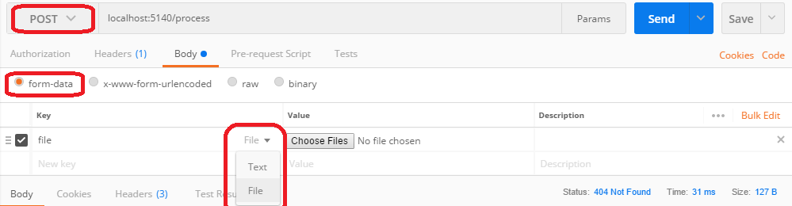

How to upload a file and JSON data in Postman?
I am using Spring MVC and this is my method:
/** * Upload single file using Spring Controller. */ @RequestMapping(value = "/uploadFile", method = RequestMethod.POST) public @ResponseBody ResponseEntity<GenericResponseVO<? extends IServiceVO>> uploadFileHandler( @RequestParam("name") String name, @RequestParam("file") MultipartFile file, HttpServletRequest request, HttpServletResponse response) { if (!file.isEmpty()) { try { byte[] bytes = file.getBytes(); // Creating the directory to store file String rootPath = System.getProperty("catalina.home"); File dir = new File(rootPath + File.separator + "tmpFiles"); if (!dir.exists()) { dir.mkdirs(); } // Create the file on server File serverFile = new File(dir.getAbsolutePath() + File.separator + name); BufferedOutputStream stream = new BufferedOutputStream(new FileOutputStream(serverFile)); stream.write(bytes); stream.close(); System.out.println("Server File Location=" + serverFile.getAbsolutePath()); return null; } catch (Exception e) { return null; } } }
I need to pass the session id in postman and also the file. How can I do that?
Answer
In postman, set method type to POST.
Then select Body -> form-data -> Enter your parameter name ( file according to your code)
On the right side of the Key field, while hovering your mouse over it, there is a dropdown menu to select between Text/File. Select File, then a "Select Files" button will appear in the Value field.
For rest of "text" based parameters , you can post it like normally you do with postman. Just enter parameter name and select "text" from that right side dropdown menu and enter any value for it, hit send button. Your controller method should get called.
Suggest
The Missing Visual Guide
You must first find the nearly-invisible pale-grey-on-white dropdown for
File which is the magic key that unlocks the Choose Files button.
After you choose POST, then choose Body->form-data, then find the
File dropdown, and then choose 'File', only then will the 'Choose Files'
button magically appear:
